The Grid: Electricity = Modernity
Understanding the batteries and the grid
JaeHyun An, Kevin Gao
The entire arc of human history are defined by how we harness and capture the energy. (From fire>Coal>Renewable)
The batteries, which can store renewable energies, allow many new technologies to exist.
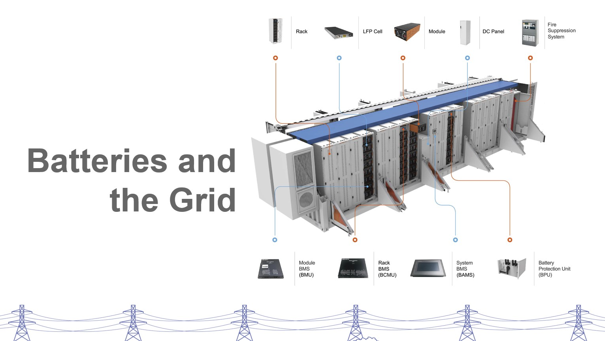 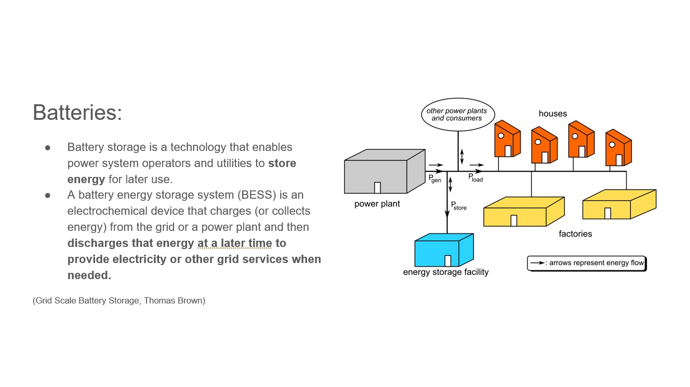 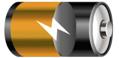Battery storage is a technology that enables power system operators and utilities to store energy for later use. A battery energy storage system (BESS) is an electrochemical device that charges (or collects energy) from the grid or a power plant and then discharges that energy at a later time to provide electricity or other grid services when needed. Several battery chemistries are available or under investigation for grid-scale applications, including lithium-ion, lead-acid, redox flow, and molten salt (including sodium-based chemistries).1 Battery chemistries differ in key technical characteristics, and each battery has unique advantages and disadvantages.
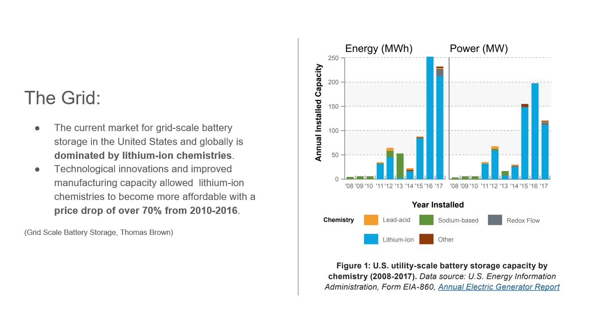The Grid: The current market for grid-scale battery storage in the United States and globally is dominated by lithium-ion chemistries (Figure 1). Due to technological innovations and improved manufacturing capacity, lithium-ion chemistries have experienced a steep price decline of over 70% from 2010-2016, and prices are projected to decline further (Curry 2017). (Double check the price drop, It is probably significantly higher now.)
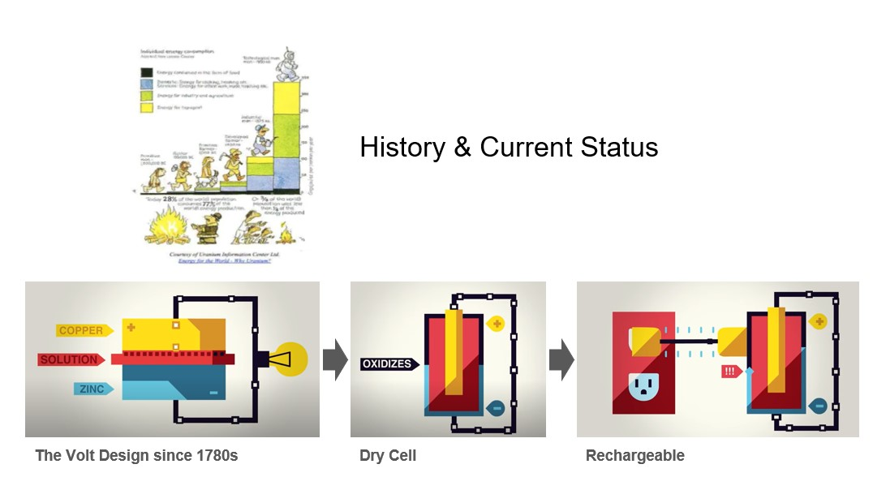 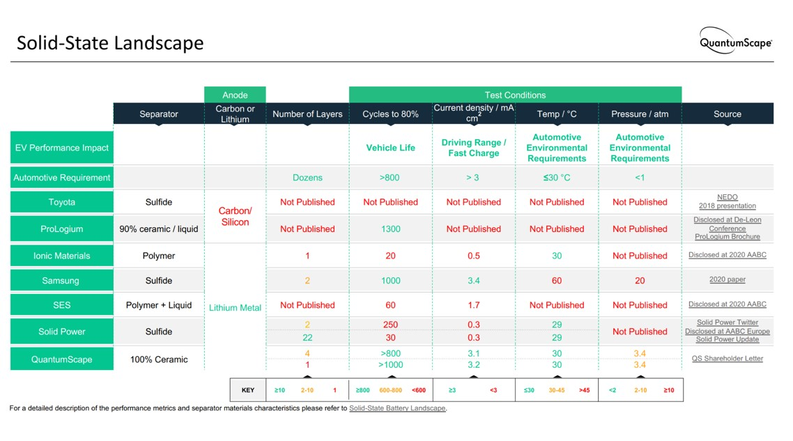 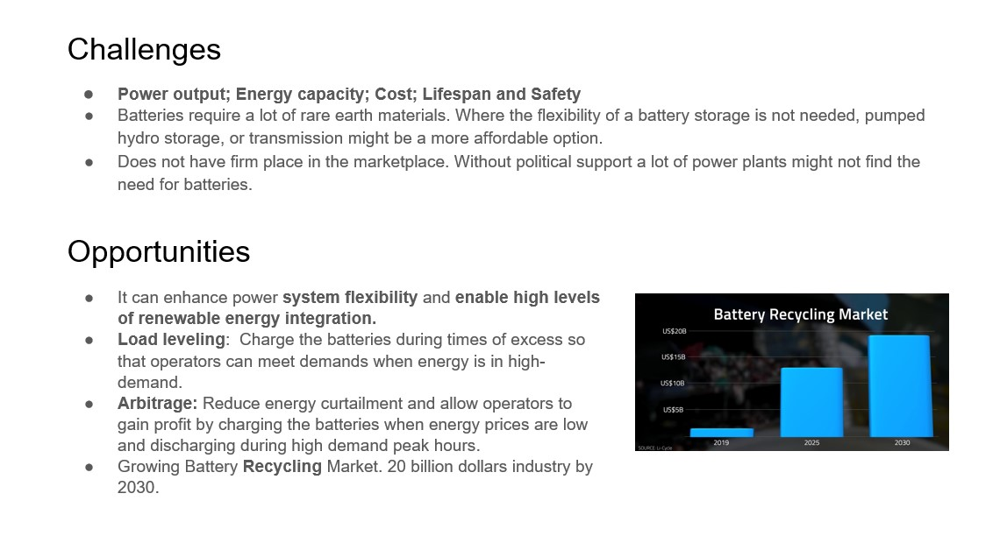 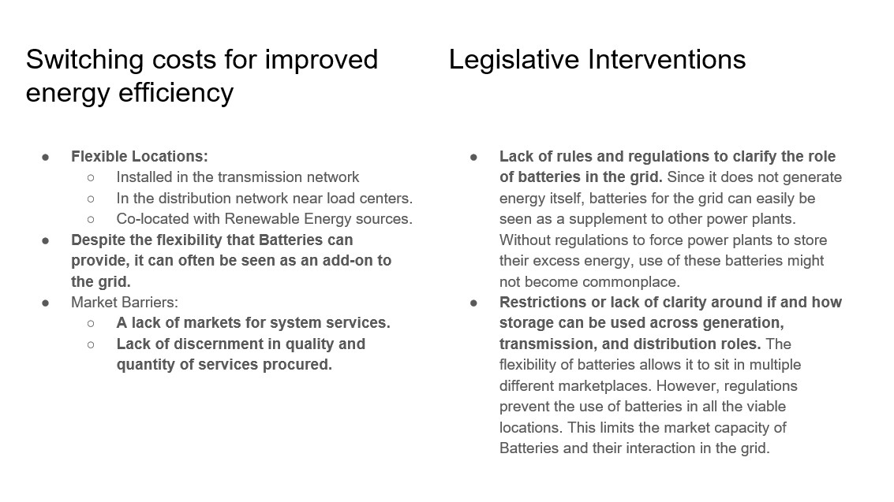 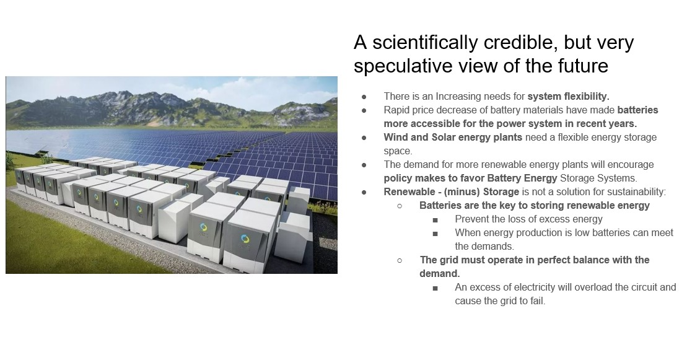 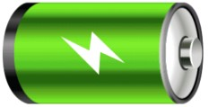Increasing needs for system flexibility, combined with rapid decreases in the costs of battery technology, have enabled Utility Batteries to play an increasing role in the power system in recent years. As prices for Battery Energy Storage Systems continue to decline and the need for system flexibility increases with wind and solar deployment, more policymakers, regulators, and utilities are seeking to develop policies to jump-start Battery Energy Storage System deployment.
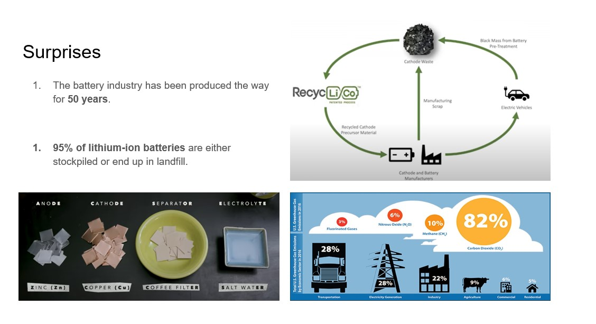
1. The battery industry has been stuck making the batteries one way for like 50 years.
2. 95% of lithium-ion batteries are either stockpiled or end up in landfill.
3. Renewable -(minus) Storage is not a solution for sustainability:
a. You have to have storage to bridge the gap for the sustainable/renewable energies, (i.e. when the sun doesn’t shine, when the wind doesn’t blow), otherwise the generated energies have to be backed up in carbon fired (diesel or gas), it’s gonna give you the most expensive electricity. (i.e. Germany)
b. The way that the grid operates, supply must be in perfect balance with demand everywhere at all the time. Any excess electricity you generated exceeds the demand, it goes in the wires and the line voltage goes up, you will blow up your devices.
What I did
- Research
- Design
- Discussion
“There are no ideas, which occur in metaphysics, more obscure and uncertain than power, force, energy, or necessary connexion…” - An Enquiry Concerning Human Understanding, David Hume (1848)
...
The Studio theme targets decarbonization which touches any number of fields, energy foremost among them. It’s a sweepingly large topic that touches upon sources (coal, oil, natural gas, hydrogen, solar/wind, nuclear etc), uses (transportation, housing etc) and infrastructure (batteries, the Grid system etc). Our goal in this exercise is two-fold: a) in an impossibly short time, develop a reasonably comprehensive, sharable overview of relevant challenges and opportunities for decarbonizing energy use; b) if time permits, tease out key themes, opportunities, obstacles and priorities across the various sectors. - Integrative Frameworks for Technology, Environment, and Society I, Jock Herron